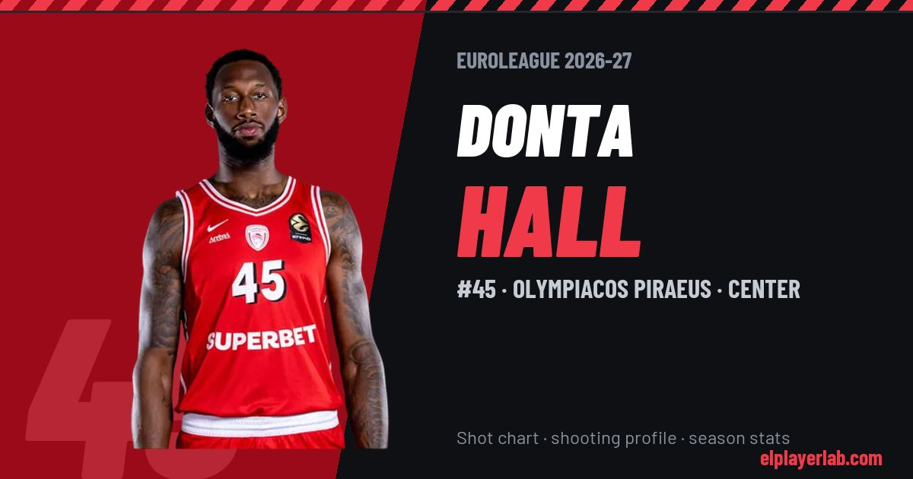

Olympiacos Piraeus · Euroleague 2026-27
Donta Hall
#45 · Center · Olympiacos Piraeus · 2026-27 · 2 games · 2.5 pts · 5.0 reb · 2.0 ast a game

- Number
- 45
- Position
- Center
- Height
- 208 cm
- Weight
- 105 kg
- Born
- 1997-08-07
- Country
- United States of America
Career
- Olympiacos 2025-2027
- Baskonia 2024-2025
- AS Monaco 2021-2024
- Orlando Magic (NBA) 2020-2021
- Raptors 905 2021
- NBA G League Ignite 2020-2021
- Brooklyn Nets (NBA) 2019-2020
- Detroit Pistons (NBA) 2019-2020
- Grand Rapids Drive 2019-2020
- Alabama (NCAA) 2015-2019
Euroleague Player Lab: shot charts, shooting profiles and season stats for every player, rebuilt after every game.